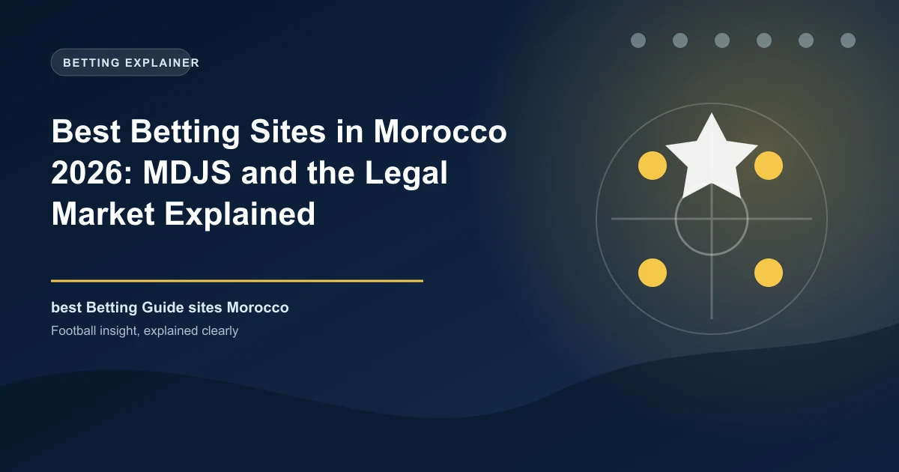

Best Betting Sites in Morocco 2026: MDJS and the Legal Market Explained

Morocco does not have a licensed online betting market in the way most countries do. Sports betting is a state monopoly run by La Marocaine des Jeux et des Sports (MDJS), and every offshore bookmaker active in the country operates in a grey area that got significantly more expensive in 2025.

If you search for the best betting sites in Morocco, you will find countless lists of offshore bookmakers advertising Arabic- and French-language offers. Here is what most of them do not tell you: none of those sites is licensed in Morocco, and Morocco introduced a punitive withholding tax on winnings from foreign betting platforms in 2025. The only fully legal sportsbook in the kingdom is MDJS, the state operator that has held the betting monopoly for decades.
This guide explains the legal position precisely, what the 2025 tax really does, where the 2026 court battle over site blocking stands, and what the practical options actually are for Moroccan bettors.
Morocco Betting at a Glance
| Factor | Detail |
|---|---|
| Currency | Moroccan dirham (MAD) |
| Regulator | None for online betting; state monopoly held by MDJS (Ministry of Youth and Sports oversight) |
| Legal sports betting | MDJS only - the state operator, online at mdjs.ma and in about 600 retail shops |
| Offshore operators | Grey area; no local licence exists for them (Curaçao, Anjouan, Malta licences) |
| Tax on offshore winnings | 30% withholding + 2% solidarity contribution (32% total), enforced from 1 July 2025 |
| Minimum age | 18 |
| Payments | Cash and CMI cards in shops; bank transfer or e-wallet withdrawals via MDJS |
| Population | About 39 million |
| Main sports | Football - Botola Pro, European leagues, AFCON |
Know the Rules: A State Monopoly, Not a Licensing Market
Morocco has allowed gambling since a 1930 decree, and the founding legal text is the Dahir of 1966 (Dahir No. 1-65-206). That law grants the state the right to decide where, when and by whom gambling is offered, and in practice it created three state monopolies. Sports betting and scratchcards belong to La Marocaine des Jeux et des Sports (MDJS), created in 1962; horse racing and its pari-mutuel pools belong to SOREC; draw and instant lotteries belong to the Loterie Nationale, established in 1971.
There is no regulator that issues licences to private online bookmakers, and there is no application route for one. The only way a private company can operate legal sports betting is by being contracted by a monopoly holder: MDJS signed SISAL Jeux Maroc in February 2023 to run its sports betting platform for eight years, renewable for two. If a site claims to be a licensed online bookmaker in Morocco, it is misrepresenting itself - no such licence exists.
Land-based casinos do exist and are regulated by the Ministry of Interior on a case-by-case basis, but they primarily serve foreign tourists, and the legal gambling age nationwide is 18.
The 2025 Tax Shock: 32% on Offshore Winnings
The single most important change for Moroccan bettors came in the 2025 Finance Law. From 1 July 2025, a 30% liberatory withholding tax applies to winnings from foreign online gambling platforms, with an additional 2% solidarity contribution, for a total 32% levy on sums received. The tax is not collected from the operator - it is deducted by Moroccan banks, card processors and other payment intermediaries when the payout passes through them and transferred to the General Directorate of Taxes.
Because virtually every offshore payout into Morocco has to cross a Moroccan financial intermediary, the practical effect is a reduction of almost a third on any net win. Crucially, the Finance Law did not legalise offshore betting; it added a player-side fiscal tool on top of an otherwise illegal activity.
2026: The Court Battle Over Blocking
MDJS has been fighting the grey market in court. In 2024 its director general estimated illegal betting volumes at roughly 3.5 billion dirhams, with around 500 million dirhams lost to the National Sports Development Fund and 200 million dirhams to the treasury. In December 2025 a court bailiff documented how accessible offshore platforms are from Moroccan territory, prompting MDJS to sue the telecommunications operators.
On 12 January 2026 the Casablanca Commercial Court ordered Maroc Telecom, Orange Maroc and Inwi to block unlicensed platforms, including 1xBet, Betwinner, Melbet, Linebet, Stake, Betway, Mostbet and Sportsbet.io, at DNS and IP level, under a daily fine of MAD 10,000 for non-compliance. Then on 10 February 2026 the Casablanca Court of Appeal stayed that order, ruling that the telecoms regulator appeared to lack explicit legal authority for general site blocking. As of late 2026 the offshore sites remain reachable while the final ruling is pending - but every operator on that list knows its days in the Moroccan market are numbered. A future legal framework is repeatedly discussed, including local licensing, but nothing is enacted yet.
What Legal Betting Through MDJS Actually Looks Like
If you want to bet legally in Morocco, your only option is MDJS. That means either one of roughly 600 MDJS retail shops, where you bet in cash and redeem winning slips within the validity period printed on them, or the digital platform at mdjs.ma and the MDJS mobile app.
MDJS offers odds on the Botola Pro, the big European leagues and international football, and it reinvests a share of net revenue in Moroccan amateur sport and infrastructure - the public-benefit rationale for the monopoly. The digital service requires verification of your national identity card (CIN) before withdrawals, and winnings are paid to a registered Moroccan bank account or e-wallet. MDJS holds the top-level responsible-gambling certification from the World Lottery Association (WLA Level 4), so it is the only Moroccan option with any meaningful consumer protection.
The Offshore Grey Market, Honestly Assessed
The brands Moroccan players actually use are all offshore: bet365, 1xBet, Melbet, Betwinner, Linebet, Stake, Betway and Sportsbet.io among others, typically licensed in Curaçao, Anjouan or Malta. They localise well, with Arabic and French interfaces and big bonuses, which is why search demand in Morocco still heavily favours them.
Here is the honest accounting. First, none of them holds a Moroccan licence and none answers to a Moroccan authority, so a blocked withdrawal leaves you with no local recourse. Second, payouts are hit by the 32% withholding as they cross Moroccan financial rails. Third, bank cards and CMI payment flows are increasingly scrutinised, which pushes deposits towards e-wallets and even crypto - a banned payment method whose use carries its own risk. Fourth, the legal position is that offshore betting for Moroccan residents is outside the law, even though enforcement has historically targeted operators and infrastructure rather than individual players.
If you decide to use an offshore operator anyway, at minimum verify its published licence number on the issuing regulator's website, keep records of every transaction, and stake only money you can afford to lose. Understand that the withdrawal may arrive reduced by 32%, or not arrive at all.
Responsible Gambling in Morocco
Betting in Morocco in 2026 means choosing between a state monopoly with real protections and a grey market where you carry all the risk. Bet within advertised limits, treat bonuses as marketing rather than income, and stop when chasing losses. If betting stops being entertainment, MDJS publishes responsible-gambling guidance and there are professional services you can turn to outside the gambling industry.
Frequently Asked Questions
Is online betting legal in Morocco?
Sports betting is legal only through the state monopoly MDJS, which runs a digital platform at mdjs.ma and about 600 retail shops. There is no licence path for private online bookmakers, so offshore betting sites operate in a legal grey area.
Is MDJS the only legal betting site in Morocco?
Yes. MDJS is the sole legal sports-betting operator in Morocco, holding the monopoly on wagers on all sporting competitions except horse and greyhound racing. Any site claiming a Moroccan sports-betting licence is either offshore or a fraud.
What is the 32% withholding tax on gambling winnings in Morocco?
From 1 July 2025, the Finance Law imposes a 30% withholding tax plus a 2% solidarity contribution on winnings from foreign online gambling platforms, deducted by Moroccan banks and payment intermediaries when the payout is received.
Can I be prosecuted for betting on offshore sites in Morocco?
Historically enforcement has targeted operators and unlicensed physical infrastructure rather than individual players. However, offshore betting for Moroccan residents sits outside the law, and there is no Moroccan authority that will resolve a dispute against an offshore site.
How do I withdraw winnings from MDJS?
On the digital platform you verify your national identity card (CIN), then withdraw to a registered Moroccan bank account or e-wallet. Retail winnings are redeemed in cash at any MDJS outlet within the validity period on the slip.
Put These Principles Into Practice Today
Every strategy on this page is only as good as the markets you apply it to. Check the latest predictions, odds, and in-play opportunities below.
Last updated: August 2026 | By Tochukwu Mesigo |
Build Winning Accumulator Tickets
Generate optimized accumulator combinations from today's data-driven predictions. Set your target odds and get instant ticket suggestions.
Free Ticket Builder →